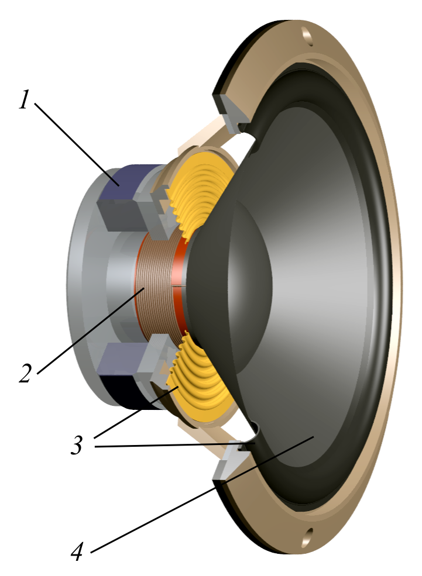
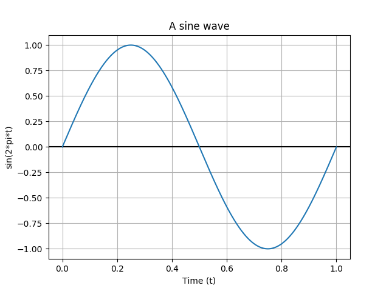

When working on projects that deal with game development (or emulators), us developers have to get familiar with various subjects such as video rendering, input handling, and, of course, audio.
When trying to get audio into our programs, the most reasonable choice is often to use a library such as FMOD or SDL_Mixer that allows us to play sound files concurrently without headache.
However, sometimes, we need more control over the sound; we may even want to generate audio on the fly programmatically. How can we do this?
In this article, I will try my best to explain the basics of audio from a programmer's standpoint. No previous knowledge of audio is necessary. I will be using the SDL2 (2.0.4+) and the C programming language for this article, but all concepts are obviously transposable to other libraries and languages.
What is sound? ¶
In physics, sound is a vibration that typically propagates as an audible wave of pressure, through a transmission medium such as a gas, liquid or solid. In human physiology and psychology, sound is the reception of such waves and their perception by the brain.
— "Sound" article on Wikipedia
To say it in other words: sound is a vibration that our ears pick up, that is interpreted by our brain, giving us the perception of sound.
If sound is a vibration, how do we create those vibrations? On modern computers, the vibrations are physically generated by the speakers: their job is to transform an audio signal into sound.
The speakers read the audio signal and move rapidly the diaphragm (the round-shaped thing you see on the speakers) back and forth accordingly, pushing on the air to create the sound waves.

{kind=link}
Our job, as programmers, will be to create the audio signal (or "stream"), and send it to the speakers through an audio library (in this case, the SDL2).
The audio stream ¶
An audio stream is just a sequence of values, each value being called a sample. But what will be the type of these samples? Well, that's up to you: you can either send 16-bit signed integers, 32-bit unsigned integers, 32-bit floats, etc. Libraries usually accept different sample formats, and most of them can even convert from one format to another on the fly.
These samples will be sent by the audio library to the speakers at a constant rate in bulk (using an internal audio buffer). Typically, the library will ask you the buffer size. For most cases, 4096 is good enough. If you notice that the audio is delayed, you can try decreasing this value.
That being said, we also need to know how many samples there is in one second: this is called the sampling rate. I won't into much detail for now, but know that 44100Hz is a standard value: it is the sampling rate used on audio CDs, and is good enough for most use cases.
Sine waves and quantization ¶
During our first example, we will be writing a program that plays a sine wave. A sine wave is a simple waveform that is defined by 𝑦(𝑡) = 𝐴sin(2𝜋𝑓𝑡+𝜑).

How do we get from this mathematical formula to an array of samples that can be sent to our audio stream?
The idea is to take samples at a constant interval — by incrementing t by the same value. This process is called quantization:
float f = 440;
float samples[NB_SAMPLES];
for (int i = 0; i < NB_SAMPLES; i++) {
samples[i] = sin(2 * M_PI * f * i / audio_spec.freq);
}
You can notice that our 𝑡 component is equal to i divided by the sampling rate. This way, we make sure that the same sine wave will be played, even if we change the sampling rate.
On the topic of sampling rate, now may be the time to add more detail.
The sampling rate can be seen as the resolution of the audio. Let's take an example to illustrate my point: on the GIF below, you can see a 10kHz sine wave (in blue) quantized using a sampling rate of 25Hz, 100Hz, 500Hz and 1000Hz.
A sine wave sampled at 25/100/500/1000Hz
When increasing the sampling rate, we can see that the shape of the wave is becoming more and more distinct. Through the speakers, that would result in a clearer sound.
Playing a sine wave ¶
Now that we have all the notions that we need, let's write some code. In the following example, we push three seconds of audio (a simple sine wave) to the SDL, and let it play it. Note that I've removed every SDL error handling check to shrink the code a little bit.
#include <stdio.h>
#include <math.h>
#include <SDL.h>
#define GAIN 5000
int main(void) {
SDL_Init(SDL_INIT_AUDIO);
// the representation of our audio device:
SDL_AudioDeviceID audio_device;
// setting up our audio format:
SDL_AudioSpec audio_spec = {0};
audio_spec.freq = 44100; // sampling rate
audio_spec.format = AUDIO_S16SYS; // sample format
audio_spec.channels = 1; // number of channels
audio_spec.samples = 4096; // buffer size
audio_spec.callback = NULL;
// opening the default audio device:
audio_device = SDL_OpenAudioDevice(NULL, 0, &audio_spec, NULL, 0);
// pushing 3 seconds of samples to the audio buffer:
double x = 0;
for (int i = 0; i < audio_spec.freq * 3; i++) {
x += .05f;
// SDL_QueueAudio expects a signed 16-bit integer
Sint16 sample = sin(x) * GAIN;
int sample_size = sizeof(Sint16) * 1;
SDL_QueueAudio(audio_device, &sample, sample_size);
}
// unpausing the audio device: starts playing the queued data
SDL_PauseAudioDevice(audio_device, 0);
SDL_Delay(3 * 1000);
SDL_CloseAudioDevice(audio_device);
SDL_Quit();
return 0;
}
You can hear the result here.
Let me walk you through this code step by step.
First, we setup our audio format (SDL_AudioSpec) that will be used to open the audio device with SDL_OpenAudioDevice. If you prefer sending 32-bit floats instead of 16-bit integers, you can replace AUDIO_S16SYS with AUDIO_F32SYS (read more about SDL audio formats here).
Note: remember the little explanation about speakers and their diaphragm? Here, for example, a sample of −32768 will physically set the diaphragm to one of its extremities, and a value of 32767 will set it to the other extremity. The sample value 0 will set the diaphragm to its initial position.
The closer the samples are to 0, the quieter the sound will be. Conversely, if the samples are close to the minimum and maximum values (−32768 and 32767 in the case of signed 16-bit integers) ; the sound will be loud. That is the exact reason why we had to multiply samples (which were in the range [-1, 1]) by 5000. If you remove the multiplication and launch the program, you won't hear a thing.
Then, when the audio device is opened, we push some samples (the equivalent of 3 seconds at 44.1kHz) to the audio device. For this example we use the function SDL_QueueAudio which allows us to queue an arbitrary number of samples to the audio device. I voluntarily send samples one by one for the example, but you will probably want (when possible) to send samples in bulk for performance reasons.
Trying out other waveforms ¶
Sine waves are nice, but let's try another one: the square wave.
// ...
float square(float x) {
return sin(x) > 0 ? 1 : -1;
}
// ...
Sint16 sample = square(x) * 1500;
// ...
You can hear the result here.
Stereo output ¶
In the first example, we have set channels attribute to 1, because we wanted a mono output. If you want to output audio to multiple channels, you can change this value:
// ...
audio_spec.channels = 2; // we now want a stereo output
// ...
// for each turn of the "for" loop, we now need to send two samples:
// one for the left channel, and one for the right channel
int sample_size = sizeof(Sint16) * 1;
SDL_QueueAudio(audio_device, &sample, sample_size); // left sample
SDL_QueueAudio(audio_device, &sample, sample_size); // right sample
// ...
Generating silence ¶
What if we need to generate "no sound" sometimes? Well, with the explanation about the diaphragm in mind, we can easily find the answer: to generate silence, we must push the exact same sample for a while.
In practice, we usually use the initial position (0 for signed integers) to generate silence:
// generating 3 seconds of silence:
for (int i = 0; i < audio_spec.freq * 3; i++) {
Sint16 sample = 0;
SDL_QueueAudio(audio_device, &sample, sizeof(Sint16));
}
Multiple sounds at once ¶
We know how to output a single sine wave or square wave. But what if we want to output multiple waves at the same time?
This question — that has long perplexed me — has an incredibly simple answer: sum the two (or more) together. In our example:
Sint16 sample = sin(x) * 5000;
sample += square(x) * 1500;
The result can be heard here.
The problem coming from summing multiple waves together is that the resulting value could be outside of your format's range — for example, while doing Sint16 sample = 32767 + 32767. If that happens, a distortion in the sound will be heard, which is almost always undesirable.
There are lots of ways to avoid this phenomenon, but most are too complicated to explain in this article. The simplest one is to clamp the samples to constrain them in your format's range.
SDL2 callbacks ¶
During this article, we used the SDL function SDL_QueueAudio to queue some samples that will be played. The SDL offers another way to play audio: using a callback.
You can indeed provide a function to the callback attribute of the structure SDL_AudioSpec. When this attribute is not NULL, the SDL will call the function you provided every time it needs audio samples.
The following example generates an infinite sine wave:
#include <stdio.h>
#include <math.h>
#include <SDL.h>
static double x = 0;
static void my_callback(void* userdata, Uint8* stream, int len) {
Sint16* stream16 = (Sint16*) stream;
int nb_samples = len / sizeof(Sint16);
for (int i = 0; i < nb_samples; i++) {
x += .05f;
stream16[i] = sin(x) * 5000;
}
}
int main(void) {
SDL_Init(SDL_INIT_AUDIO);
// the representation of our audio device:
SDL_AudioDeviceID audio_device;
// setting up our audio format:
SDL_AudioSpec audio_spec = {0};
audio_spec.freq = 44100; // sampling rate
audio_spec.format = AUDIO_S16SYS; // sample format
audio_spec.channels = 1; // number of channels
audio_spec.samples = 4096; // buffer size
audio_spec.callback = my_callback;
audio_spec.userdata = NULL;
// opening the default audio device:
audio_device = SDL_OpenAudioDevice(NULL, 0, &audio_spec, NULL, 0);
// unpausing the audio device: starts playing the queued data
SDL_PauseAudioDevice(audio_device, 0);
SDL_Delay(10 * 1000);
SDL_CloseAudioDevice(audio_device);
SDL_Quit();
return 0;
}
Conclusion ¶
I hope this article managed to demystify audio a bit, and that you have a better understanding of what happens when audio is being played. Try to experiment — you now have all the notions that you need to make a basic synthesizer... 😉